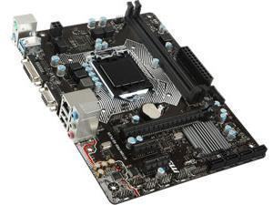

Hovedkortet er datamaskinens hovedkomponent. Det er et stort kretskort som kobler sammen alle komponentene i datamaskinen. Her ligger blant annet informajson om hvordan datamaskinen skal starte opp. Dette sørger for at vi får åpnet operativsystemet når vi starter opp maskinen. Les mer
